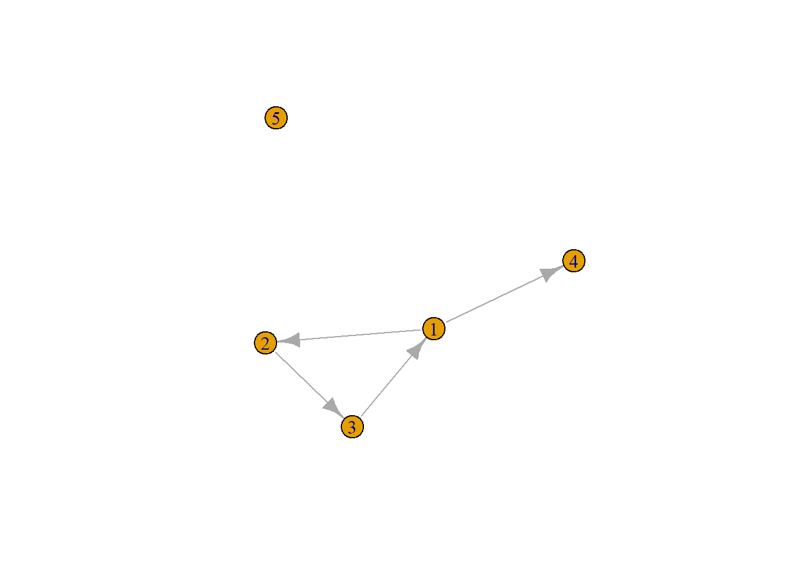
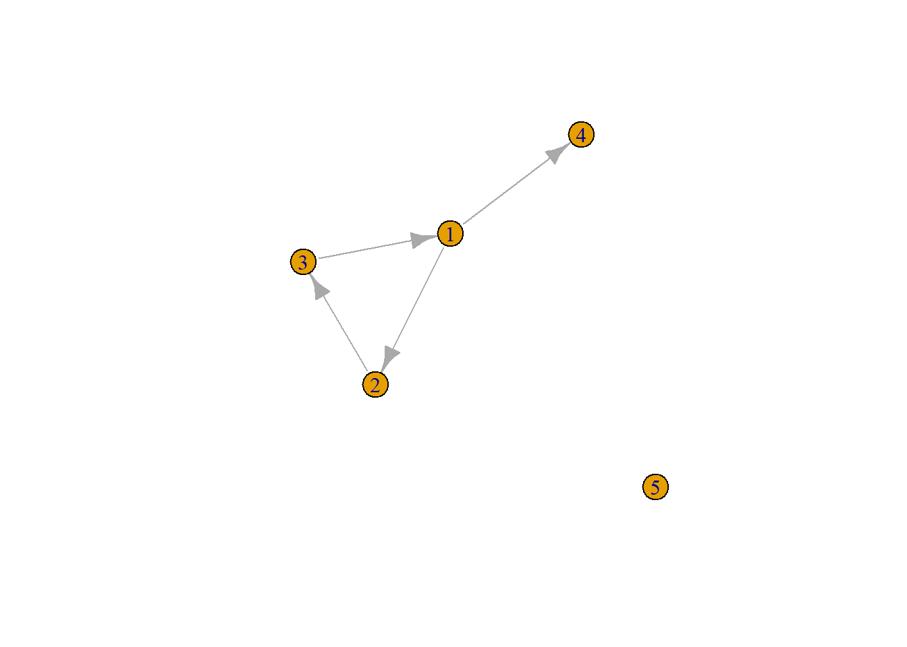

2 Handling social network data in R
This R notebook demonstrates some data handling procedures for relational (social network) data, especially data as generated by “name generator” questionnaires.
We start by loading some useful packages:
igrapgandnetworkare packages specifically for handling network data;reshape2andtidyverseare more general-purpose packages that included useful procedures.
NOTE: if you get any “there is no package called…” error messages, make sure you install these packages first using the install.packages() function (not included here).
2.1 Getting network data into R: igraph
We start by reading some network data from disk (or from the internet, in this case). A simple and very common way to store data is as “comma-separated values” (CSV). Let’s load some “toy data”:
url1 <- "https://github.com/rensec/sasr08/raw/main/g_adj_matrix_simple.csv"
g_matrix <- read.csv(file = url1, header = FALSE)
g_matrix## V1 V2 V3 V4 V5
## 1 0 1 0 1 0
## 2 0 0 1 0 0
## 3 1 0 0 0 0
## 4 0 0 0 0 0
## 5 0 0 0 0 0These data are stored as an adjacency matrix. While reading the data, R automatically created column names and loaded the data as a data frame:
## [1] "data.frame"For network analysis, this is often not practical; for example we may want to do matrix calculations. So instead, let’s turn this into a matrix object:
## V1 V2 V3 V4 V5
## [1,] 0 1 0 1 0
## [2,] 0 0 1 0 0
## [3,] 1 0 0 0 0
## [4,] 0 0 0 0 0
## [5,] 0 0 0 0 0For clarity, we also add row- and column names, simply numbering them:
## 1 2 3 4 5
## 1 0 1 0 1 0
## 2 0 0 1 0 0
## 3 1 0 0 0 0
## 4 0 0 0 0 0
## 5 0 0 0 0 0QUESTION: How many nodes are included in this matrix, and how many edges are there between these nodes?
Typically, information about nodes and edges are stored in separate files. In our next step, we’re reading an attribute of the nodes:
## id age
## 1 1 20
## 2 2 21
## 3 3 25
## 4 4 NA
## 5 5 21We now have information about nodes and edges loaded in R . However, to R, these are just like any data; it doesn’t “know” that these are network data. In order to be able to use specific SNA procedures, we first need to create network objects, which is what we’ll do next.
NOTE: the data that we’ve loaded now just happened to be stored as an adjacency matrix; it is also possible to store network data on disk in other formats. We’ll get to that later.
2.1.1 Creating network objects in igraph
Network analysis packages such as igraph handle data efficiently by storing data in their own type of objects, which basically ensure that all procedures make sense for network data. A network object as used by igraph includes the information on both edges and nodes of a network in a single “box” (and potentially other information about the network too).
To create an igraph network object from our matrix object we run:
## [1] "igraph"## IGRAPH e20e94d DN-- 5 4 --
## + attr: name (v/c)
## + edges from e20e94d (vertex names):
## [1] 1->2 1->4 2->3 3->1The output from running “g” already shows that this is now a network object (specifically: an object of the class “igraph”, as shown by class()): R interprets the object as a network and shows us the edges in the network. This also means that other R functions - to the extent that they have network methods implemented - now automatically recognize g as a network object and will behave accordingly (note that this is a key feature of R as an “object-oriented language”). For example, we can now run the standard plot() function and it will create a network map:

Now we can also add node attributes to the object (in this case we have only one):
2.1.2 Creating network objects from adjacency list data
A common format for network data, especially if collected via survey methods, is the adjacency list. In this format, we have a row for each node, and columns that indicate the first, second, third…etc connection of each node. The file g_adj_list.csv is an example of this format (it is again our toy network as used in the previous excercises).
## id age friend1 friend2
## 1 1 20 2 4
## 2 2 21 3 NA
## 3 3 25 1 NA
## 4 4 NA NA NA
## 5 5 21 NA NANote that:
The columns “friend1” and “friend2” could, for example, refer to “name generator” survey questions, where each node number in the column refers to a friend “nominated” by the node (respondent) in the corresponding row. In this case, the nodes can have at most two (outgoing) ties.
This format allows for easy inclusion of node attributes as well, such as, in this case, the column “age”.
The most convenient way to create a network object from these data, is to first transform them into an edge list, as this is a format for which igraph has an import function, such that we can turn it into a network object.
To create an edge list, we first make the data long.
g_elist_from_alist <- g_adj_list %>%
select(id, friend1:friend2) %>% #keep only the network variables (and id)
melt( id.vars = "id") #from the reshape2 package
g_elist_from_alist## id variable value
## 1 1 friend1 2
## 2 2 friend1 3
## 3 3 friend1 1
## 4 4 friend1 NA
## 5 5 friend1 NA
## 6 1 friend2 4
## 7 2 friend2 NA
## 8 3 friend2 NA
## 9 4 friend2 NA
## 10 5 friend2 NAWe could do the same using the tidyr package (automatically loaded with tidyverse:
g_adj_list %>% # (we don't save it into an object as above this time, since we just want to show that the result is the same)
select(id, friend1:friend2) %>% #keep only the network variables (and id)
pivot_longer(c(friend1, friend2))## # A tibble: 10 × 3
## id name value
## <int> <chr> <int>
## 1 1 friend1 2
## 2 1 friend2 4
## 3 2 friend1 3
## 4 2 friend2 NA
## 5 3 friend1 1
## 6 3 friend2 NA
## 7 4 friend1 NA
## 8 4 friend2 NA
## 9 5 friend1 NA
## 10 5 friend2 NATo create an edge list we subsequently drop all missing values on “value” and do some housekeeping:
g_elist_from_alist <- g_elist_from_alist%>%
filter(!is.na(value)) %>% # drop the missings
rename(from ="id", to = "value", sourcevar= "variable") %>% #just nice for interpretation
relocate(to, .after=from) #move around the columns
g_elist_from_alist## from to sourcevar
## 1 1 2 friend1
## 2 2 3 friend1
## 3 3 1 friend1
## 4 1 4 friend2We can now interpret each {from,to} combination as a directed edge (tie) from respondent to alter; sourcevar is an edge attribute indicating where in the adjacency list columns the alter was mentioned. Strictly speaking you don’t need the latter for a simple edge list, but it’s useful to keep in case you want to reverse the procedure.
QUESTION: Besides useful more data manipulation procedures, keeping the information in sourcevar could also be important for more substantive reasons. Can you think of such a reason?
Now we can import this into a network object with an igraph function:
g_from_elist <- graph_from_data_frame(g_elist_from_alist) #This is a proper igraph graph object
plot(g_from_elist)Note however that we lost the isolate! To include the isolate, we need to feed the function also the list of all the nodes:
nodelist <- select(g_adj_list,id,age)
g_from_elist <- graph_from_data_frame(g_elist_from_alist, vertices = nodelist) #This is a proper igraph graph object
plot(g_from_elist)
That’s better! Note that besides the node IDs, we also include the age variable in the network object as a node attribute, such that we could use it in analyses based on the network object.
2.2 The reverse direction: exporting from igraph objects
Handling your network data as igraph objects is useful for social network analysis, but sometimes we also want to transform our data back from network objects to “regular” matrix objects or data frames. We briefly cover some of these cases here.
2.2.1 From igraph to adjacency matrix
## 1 2 3 4 5
## 1 0 1 0 1 0
## 2 0 0 1 0 0
## 3 1 0 0 0 0
## 4 0 0 0 0 0
## 5 0 0 0 0 0We here specify sparse = FALSE because by default, as_adjacency_matrix() will return a “sparse matrix” (just run as_adjacenct_matrix(g) on your R console and see what comes out), which is a somewhat more efficient way of handling matrices with many zeroes. To demonstrate that we can recreate our original adjacency matrix however, we don’t want that here. To check whether the resulting matrix is indeed identical to what we originally read from disk we can do:
## [1] TRUE2.2.2 From igraph to edge list
## from to sourcevar
## 1 1 2 friend1
## 2 2 3 friend1
## 3 3 1 friend1
## 4 1 4 friend2Note the use of the “namespace” “igraph::” here, to indicate that we need the igraph function here, not the function with the same name from the dplyr/tidyverse package
Note that now, once more, we have lost our isolated node 5! To get all nodes, we could simply run:
## name age
## 1 1 20
## 2 2 21
## 3 3 25
## 4 4 NA
## 5 5 212.2.3 Back to an adjacency list from igraph
edgelist_2 <- igraph::as_data_frame(g_from_elist, what = "edges")
nodelist_2 <- igraph::as_data_frame(g_from_elist, what = "vertices")
# Note the use of the "namespace" "igraph::" here, to indicate that we need the igraph function here, not the function with the same name from the dplyr/tidyverse package
d <- edgelist_2 %>%
rename(id = "from") %>%
pivot_wider( id_cols = id, names_from = sourcevar, values_from = to ) %>%
merge(nodelist_2, by.x = "id", by.y = "name", all.y = TRUE ) %>%
relocate(age, .after = id) %>%
type_convert() #as_data_frame returns characters; this transforms it back to numeric##
## ── Column specification ─────────────────────────────────────────────────────────────────────────────
## cols(
## id = col_double(),
## friend1 = col_double(),
## friend2 = col_double()
## )## id age friend1 friend2
## 1 1 20 2 4
## 2 2 21 3 NA
## 3 3 25 1 NA
## 4 4 NA NA NA
## 5 5 21 NA NA…and we’re back!
2.2.4 From edge list to network package object
We can also import it into a network object using the network package (as used by the sna and ergm packages).
## Network attributes:
## vertices = 5
## directed = TRUE
## hyper = FALSE
## loops = FALSE
## multiple = FALSE
## bipartite = FALSE
## total edges= 4
## missing edges= 0
## non-missing edges= 4
##
## Vertex attribute names:
## age vertex.names
##
## Edge attribute names:
## sourcevar